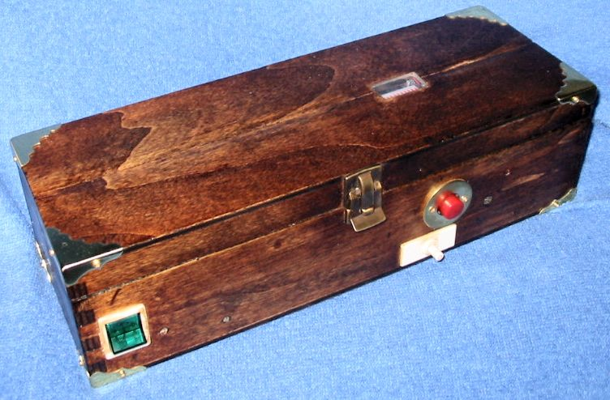

Electronic flash.

{kind=link}
{kind=link}
The inside of the electronic flash.
Power comes from 4 1.5 volt D cells in the battery compartment. The high voltage to power the flash tube (up to 350 volts) is generated as AC by a transformer and vibrator, is then full wave rectified and stored in a special capacitor.
The Xenon flash tube is triggered manually by a switch feeding a high voltage trigger transformer. The flash tube is at the focus of a parabola to give a forward light beam.
A digital LED bar graph readout monitors the voltage on the capacitor. This electronics board is located in the lid of the box.
Audio digitizer.
{kind=link}
An audio digitizer whose interface is the parallel port of a PC.
My design is a simple version of a one stage sigma-delta modulator. The audio from the microphone is amplified by an operational amplifier stage. The signal passes through a second op amp with a tunable bias which removes its DC component. This is crucial and must be adjusted using and oscilliscope. It is then digitized to 1 bit by a comparator. The bit stream feeds into the parallel port interface where it is sampled by my PC.
I've written a C program which samples the digital signal from the parallel port and saves it to a binary file. To play back the audio, the same program reads the binary file and toggles the PC speaker on and off through the PC's registers.
It's astounding that this one-bit quantization works. The key is that the signal is greatly oversampled (~10-20 times Nyquist rate) and the inertia of the speaker averages out and reconstructs the original signal according to the ergodic theorem.
Power Supply
{kind=link}
A ruggedized regulated linear power supply.
The voltage is adjustable from 1.335V to 34.5V and the current can go up to 2 amps. We have very steady voltage regulation with very low noise.
{kind=link}
Inside of the power supply.
Here's a schematic diagram. I've used Gimp to hand draw circuit symbols.
{kind=link}
{kind=link}
The design is based on a 723 voltage regulator chip and a 2N2055 power transistor for precise voltage regulation with low noise.
After full wave regulation, DC goes to a humongous filter capacitor, then to the power pass transistor with a huge black painted aluminum heat sink. The supply is current limited to about 2 amps maximum. All components are rated way beyond the design limits for robustness.
{kind=link}
A slightly different design for a regulated linear power supply. Voltage can be varied from 0.751V to 36.9V
{kind=link}
Inside of the power supply. Here's a schematic diagram hand drawn with Gimp.
{kind=link}
Neon Light Flasher
{kind=link}
A neon light flasher.
Mostly for fun, but it is ruggedized and waterproof and can be used as a warning flasher in construction work.
An audio oscillator feeds power to an audio transformer. The high voltage is rectified and stored in a capacitor to power the series of neon lights.
Electronic Bell
{kind=link}
An electronic bell (shown disassembled).
The motion of a magnet triggers a Hall effect digital sensor which applies an impulse to an operational amplifier with a twin-T filter in its feedback loop, which generates a decaying sinusoid into a power amplifier which outputs to a minature speaker.
The exponentially decaying audio frequency sine wave produces a sweet "bong" sound. One can adjust the pitch, loudness and duration of the tone.
This electronic circuit actually acts as an analog computer which solves for the roots of a cubic equation.
Spark Coil
{kind=link}
Spark coil for high voltage experiments showing a Jacob's ladder.
Generates pulsed DC high voltage ~20,000 V from a 12V car battery source. Uses a standard ignition coil and points from an automobile and a handmade mechanical interrupter. The key is the 0.66μF capacitor shunted across the interrupter: when the primary current is interrupted, the capacitance and inductance of the coil form a resonant circuit whose high frequency oscillations induce a high voltage in the transformer's secondary.
We can run neon, fluorescent and ultraviolet lamps, and do a Jacob's ladder as in Mr. Spock's time viewer, burn holes in cardboard, make lots of O3, etc.
{kind=link}
My coil has a mechanical interrupter. For circuit analysis, see articles by Kurt Schraner To estimate voltage generated, one can use sphere gap tables